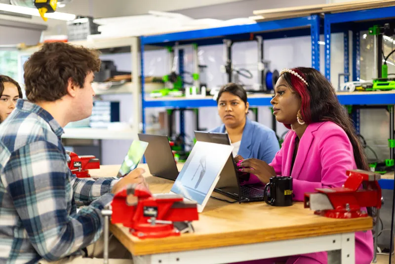
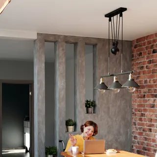

Proximité
Des petits groupes pour poser vos questions.
Votre prochaine compétence commence ici
Des ateliers courts et concrets pour avancer vers votre prochain métier, accompagnés par des formateurs indépendants.
Trouver mon premier atelierPour débuter ou progresser · En ligne · Le soir

Notre approche
Un cadre clair pour vous concentrer sur ce que vous êtes venu apprendre.
Des petits groupes pour poser vos questions.
Le prix, le niveau et la durée annoncés avant l’inscription.
Un exercice concret à chaque atelier.
Des étapes courtes, à votre rythme.
Des séances en ligne compatibles avec votre journée.
Une interface lisible et utilisable au clavier.
Le catalogue
Choisissez un atelier selon votre niveau. Les prix et créneaux ci-dessous sont des exemples pédagogiques.
3 ateliers disponibles
01 / Développement web
Débutant · Aucun prérequis
Structurez une page et donnez-lui une mise en forme claire.
02 / Outils du développeur
Débutant · Aucun prérequis
Enregistrez vos étapes et retrouvez une version précédente.
03 / Design d’interface
Intermédiaire · Bases HTML/CSS
Construisez un menu et un formulaire que chacun peut utiliser.
Aucun atelier pour ces critères. Essayez un autre niveau ou un autre créneau.
L’accompagnement
Trois profils fictifs pour illustrer le projet. Les photographies sont des images d’illustration.
Développement web
Comprendre les bases, puis construire une première page.
Git et collaboration
Des méthodes simples pour garder un projet organisé.

UX et accessibilité
Concevoir des interfaces faciles à comprendre et à utiliser.
À vous de jouer
Choisissez votre profil et votre atelier. Dans cette démonstration, aucun compte n’est créé et aucune donnée n’est envoyée.